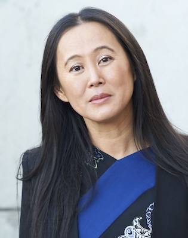

Our goal was to raise $47,000 for the 47th President.
We did it!
We thought this would be one small gathering, and the response was incredible! What else might we do together?
Click on any of the images below to learn more.
This Zoom call was one of many that formed to support Vice President Harris.
Thank you to Win with Black Women organized by Jotaka Eddy. Additional groups have included White Women for
Kamala,
South Asian Women for Harris, White Dudes for Harris, and Latter-day Saints for Harris.
If you missed the event, here’s who spoke.
Scroll down to read why these local leaders will be voting for Vice
President
Kamala Harris. Remarks shared at
Utah
Women for Kamala Event on August 15, 2024.
I’m voting for Kamala Harris because I have seen her in action.
She commands respect in a room. She speaks with passionate conviction.
She knows what’s she’s doing. She is honest, she is smart and she has that special intangible “something” that
is the
ingredient for greatness.
She is our best choice.
She is our ONLY choice.
We are NOT going back.
I was honored to hear Vice President Harris speak when she visited Utah this summer. I particularly loved her
positive
approach when she talked about what our country can be in the future. She gave me renewed hope in the promise
of America
and inspired me to work even harder to save our democracy. Vice President Harris and Governor Walz are the
ethical,
smart, and well-qualified leaders that our country needs and deserves. We all have an opportunity to help
shape the future
of our nation and world by doing everything we can to make sure they are elected.
I believe that Kamala Harris is the change needed to address, course
correct, lead, guide, DIRECT, and to create political, economic, and
social power for the collective whole. To enact policies that will
improve the lives of all people.
To be responsible for addressing challenges in our communities, related
to health disparities and civil rights.
…and to all who are gathered with us in this space, for such a time as
this, I am, Emma E Houston, and of course, I am financially supporting
and voting for Kamala Harris.
Thank you for this opportunity to actively participate in this
movement to elect Kamala Harris as President and Tim Walz as Vice
President, as the leaders of these United States of America.
This election, I am voting FOR a multi-talented, inspirational and democracy-saving candidate.
In the late 50s when I was in Elementary school….Every day as we prepared to go outside for recess ….the
captains for
the boys baseball team….pick their team members…..I was always the ONLY girl picked…I was a fast runner and
could hit
the ball….These boys were my FRIENDS and I knew I was as good as they were…
BUT AFTER school, we rode our bikes from school to the nearby boys Little League Baseball Park….There, I
vividly
recall
watching through the chain link fence, my fingers clutching the wires, as I watched these very boys that I
competed with
DURING RECESS, but where now I was required to be a spectator.
Well, it’s a different time now, people….
Our team is the United States of America. Tim Walz is our ACE catcher! And,
I’m voting for Kamala Harris because she’s not only able to be on the team, SHE’S OUR ACE PITCHER! (1) She’s a
finisher,
(2) she knows how to throw curve balls, and (3) she can pick off the runner who intends to steal a base.
Madison Limansky
I'm voting for Vice President Kamala Harris for President because she embodies the transformative change our
country
needs. Her strong commitment to reproductive rights, economic justice, and environmental sustainability sets
her apart
as a leader who fights for all Americans. With Governor Tim Walz as her running mate, they offer a unified
vision for
tackling critical issues while representing the hard-working American people. This election will shape our
future for
decades, so let’s support Harris and Walz to ensure a more inclusive and progressive America. Join me in
investing in a
brighter future for our nation.


Naja Pham Lockwood
Rear Admiral Huan Nguyen
US Navy (Retired)
As a Daughter of Utah, a refugee from Vietnam, I have not felt so excited like this for a
long time. I am so excited to be supporting Kamala Harris for the next president of the
United States and Tim Walz, as the next Vice President of our country.
Thank you, Kamala and Tim, for bringing back the ethics, the joy and the pride to be an American, to be a
woman and a daughter of refugees.
[REAR ADMIRAL HUAN NUGYEN shared thoughts in Vietnamese, a portion is translated below]
I am Rear Admiral Huan Nguyen, US Navy, Retired. I send my warmest regards to the
Vietnamese American voters.
For over 50 years, I have considered myself the luckiest person in the world. I have
lived in a society where the constitution of our nation is by the people, for the people,
and of the people. Our country has been governed by Presidents whom we have
chosen.
As citizens of this free country, we must exercise our right to vote to continue upholding
democracy and protecting our rights. Therefore, I fully support the ticket of Vice
President Kamala Harris and Governor Tim Walz, as they embody the values of
democracy, freedom, and rights that resonate with the culture of our Vietnamese
American community.
Lavanya Mahate
I find Kamala Harris's diverse background and progressive policies inspiring. As a minority woman who owns a
business
and runs a nonprofit organization, I deeply value her commitment to social justice and equity. As the first
female Vice
President and the first woman of South Asian and African American descent to run for the highest political
position, she
offers a unique perspective on leadership. Her speech at the DNC 2024 exemplifies her dedication to equity,
inclusion,
and progressive change.
Davina Smith
Why I Support Kamala Harris for President: An Indigenous Perspective
As a member of the Diné (Navajo) Nation, I firmly support Kamala Harris for President. She embodies the Diné
values of
protecting our communities, lands, and future. Harris understands the systemic injustices Native communities
face and is
committed to meaningful relationships with Tribal Nations, honoring our sovereignty and history.
She has pledged to honor tribal sovereignty and invest in Native American communities across the U.S.,
ensuring that
Tribes have a voice. Her commitment reminds me of my Diné principle of Hózhó, emphasizing harmony and balance,
she
reassures me that she will advocate for the protection of public lands and action on climate change—issues
vital to
Indigenous communities.
Kamala Harris envisions a United States where all voices, including Indigenous, are respected.
Supporting her means endorsing a future where our children can thrive, with their rights safeguarded, cultures
celebrated, and lands preserved.
Let’s do our part—vote, donate, volunteer!
Gretta Spendlove
I’m for Kamala Harris because, as important as Kamala’s policies for economic and social change are, the most
important
thing for me is her integrity and morality. Integrity and morality in our leaders are the foundation of good
government.
Kamala Harris would bring that strong foundation as president, but Donald Trump would not. I am also for
Kamala Harris
because of the joy, optimism, and vision for the future that she brings. Those qualities are so refreshing and
invigorating after the dark, negative threats and warnings that form the basis of Donald Trump’s campaign.
Mary Ann Villarreal
A vote for Vice President Harris as president is a strong choice for a more representative and responsive
democracy.
With her extensive experience as Vice President, senator, and former prosecutor, Harris has consistently
worked to
address the needs of all Americans, regardless of status and identity.

Tori Horton
Living in a democracy is a privilege, and on November 6th, I want to know I’ve done everything to elect Kamala
Harris as
our next President. My children deserve a country where every person can thrive, and I believe Kamala Harris
is the
leader who will make that possible. She embodies leadership, putting others first and upholding the law, even
when no
one is watching. She will work to create an America that protects individual rights and bridges divides across
party
lines.
And if you want one more idea, please consider hosting your own $47 for #47 house party. You can bring in your
local
special guest to raise funds and share wonderful conversations from your living room. Contact Tori Horton
(horton.tori@gmail.com) for details and help to start your event.